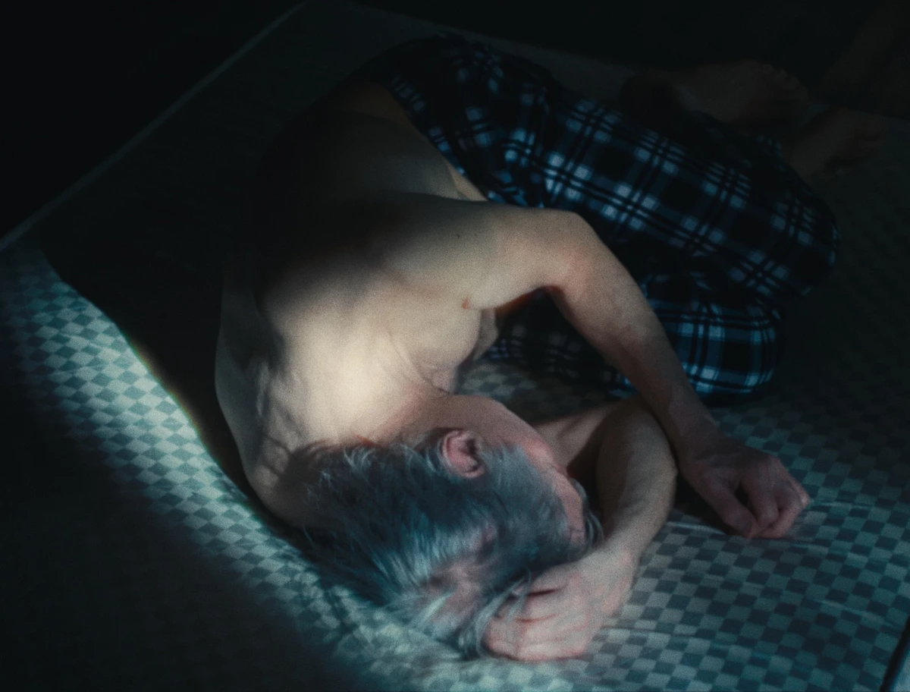
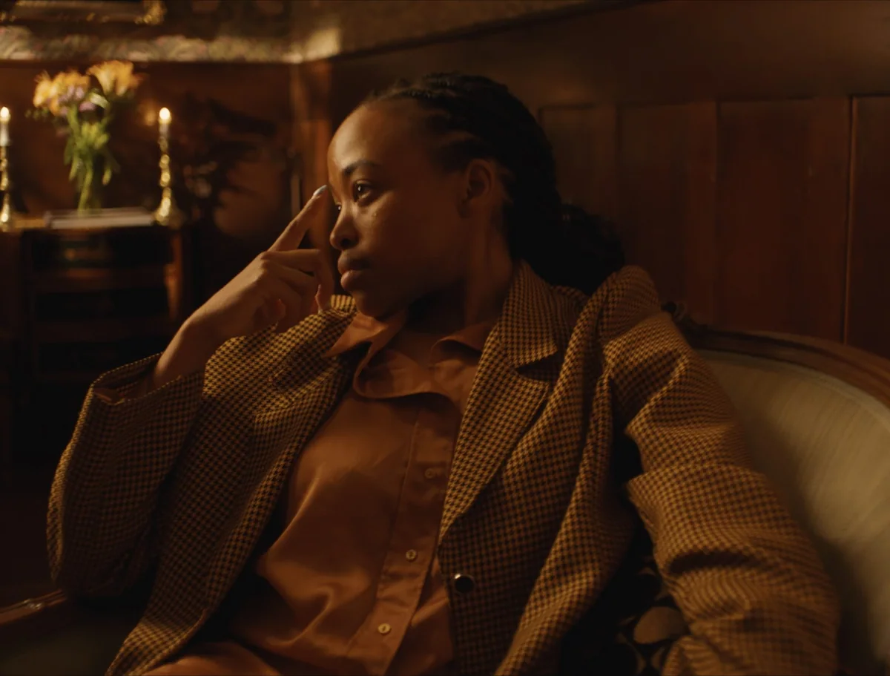
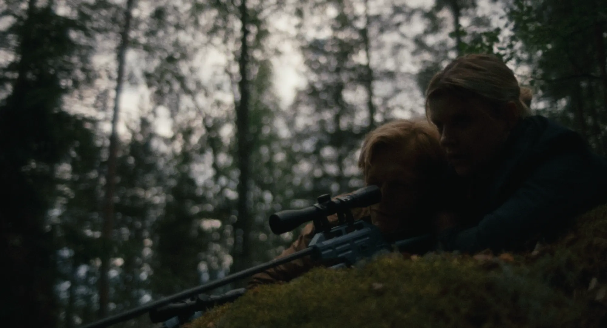
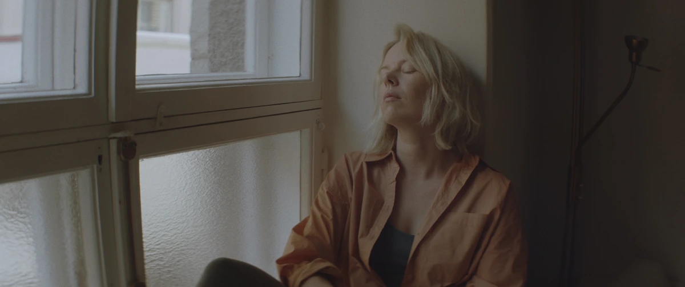
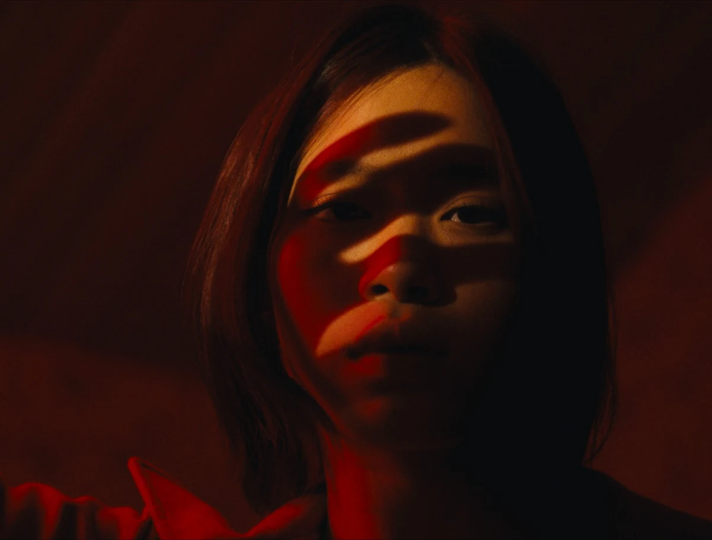
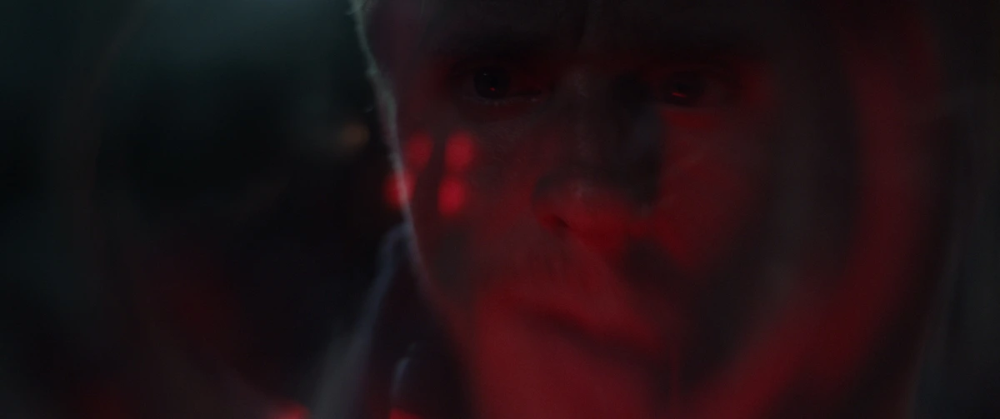
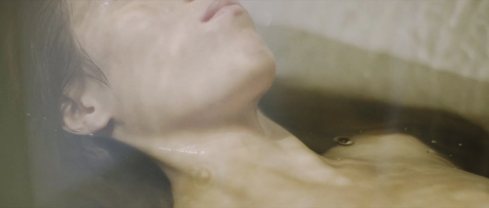
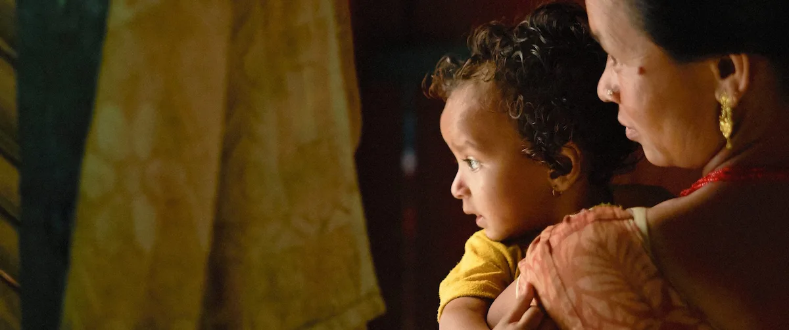

DRIVING FORCES · Longing
Directed by HEINI SUSANNE
Narrative

DRIVING FORCES · Ego
Directed by HEINI SUSANNE
Narrative

KANTO
Directed by SILVA KUUSNIEMI
Narrative

THE LIMELIGHT LIFE
Directed by JUHO-PEKKA TANSKANEN
Narrative

DRIVING FORCES · Desire
Directed by HEINI SUSANNE
Narrative

THE FISHERMAN
Directed by RAUNO RONKAINEN
Narrative

DISTANCIA
Directed by LAURA PIQUÉ
Narrative

MAIA
Directed by NIKTÉ TELEGUARIO MARÍN
Narrative

ELISABETH ELEANOR SIDDAL
Directed by LAURA PIQUÉ
Narrative